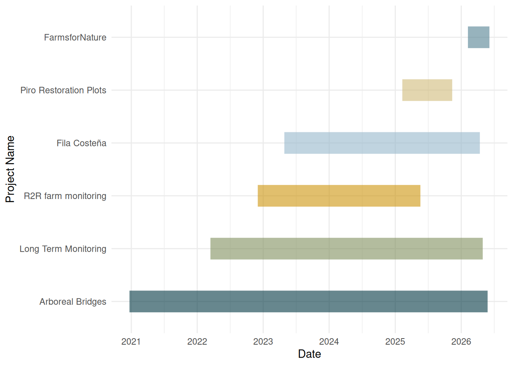

Camera traps Wildlife
Updated on 2026-09-12
1 Introduction
Wildlife is one of the programs that Osa Consevation harbours, you can have a look of the organization here: https://osaconservation.org/ .
The main goal of Wildlife program is to understand, protect and restore wildlife within the biological ccorridors in the “Region Brunca” for future generations through biodiversity monitoring at the landscape scale, application of conservation technologies, engaging local stakeholders, and adopting evidence-based restoration techniques, ultimately advancing climate change adaptation and resilience of the South Pacific region of Costa Rica.
One of the main tools used here are camera traps. Those are non-invasive motion-activated devices strategically placed across the corridor to capture high-resolution images and videos of wildlife in their natural habitat. They enable us to document species presence, behavior, and activity patterns 24/7, while also detecting rare, nocturnal and even arboreal species that are difficult to observe directly. The data collected feed into long-term databases, allowing us to track temporal and spatial changes in biodiversity, identify threats such as poaching or habitat fragmentation, and measure the effectiveness of our restoration and conservation actions over time.
Here we provide the main results of the current projects carried out by our team.
1.1 Study area and survey locations
In the last five years, the Wildlife program has executed several camera trap surveys along our influence area. Each one has an specific goal and you can see the details in their respective sections.

Here you can explore the locations of all the cameras. You can activate and deactivate the locations per specific project.